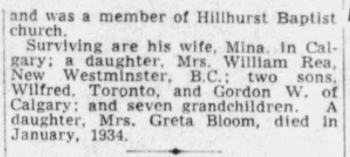
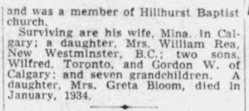

1891
Land Purchased: Samuel William Trott (Druggist)
Land Purchased: George (Lawyer) + Henry B. (Rancher) Alexander

The Coronavirus Pandemic of 2020-2021 forced hundreds of millions of people into their homes for extended times. Work. Sleep. Play. All within the confines of a single residence. I was one of those millions and I happened to be stuck inside a new home. Well, new to me; the house itself was almost hundred and ten years old.
A Century Home, sure, but not something anyone could reasonably consider "of historical significance". No one of great importance ever lived here, its construction is plain and modifications over time have largely erased its original layout and finishings. It's not going into a historical register — let's put it that way.
Still... all this time in a building forms a connection and a home at this age needs some love and some of that love requires some probing into the bones of the home. Topping up the attic insulation exposes the sawn lumber joists framing the home; someone dragged from the saw mill to frame the home. Maybe it was from the saw mill just done the road operated by the Eau Claire company. Removing a damanged kitchen backsplash exposes the original mason chimney; this provided generations with warm air and meals and maybe the bricks were formed from the clay of the Bow River. Replacing the floor reveals white oak planks which originally covered the floor. Leftover traces of knob-n-tube style wiring, cast iron pipes left in a wall. They all appear, and all this time and all these vestiges make a person wonder: what is the history here? Who constructed this home which still stands five generations later? How many lives ran their course between these walls?
I wanted to answer some of these questions and, amid this pandemic, it turned out I also had the time to do so.
But researching a home, I learned, is not possible without also researching the society which constructed it. Sleuthing through legal documents reveals each name as a breadcrumb into an entire thread of history. Scanning through newspaper archives reveals the attitudes and media which people of the time held and consumed. This is where I found the true value in my exercise: the history of this thoroughly average home is a history of the city it was built in. The very plainness and averageness of the home made it accessible, made it possible for such a wide spectrum of society to have come into contact with it. Ranchers, the Prairie Nouveaux Riches, Oilmen, Land Speculators, Businessman, Booms, Busts and Rejuvination, the Working Class. The timeline of the city is embedded in the story of this home, precisely because of this plainness.
This is a history of my home and the land it sits on, a lot numbered 29 in a section of land numbered 20. It is but one branch of a story which is weaved together by many places and many peoples. This is a history of Calgary, as told through My Home.
First, a disclaimer and some context which might make this story easier to understand.
I acknowledge that this is essay is focused on a history starting only in the late 1800s and a history which is dominated by European colonialism. I will not address thousands of years of history in this land by Aboriginal peoples, not because this history is not important but simply because it is not the focus of this story. Nonetheless, I acknowledge this story takes place on Treaty 7 land and that a great number of injustices made this story impossible. Injustices which are still with us today.
The primary sources used to reconstruct this history include land title searches, buiding permit records, the archives of the Calgary Herald, and directories for the city of Calgary, and other written sources. Land titles are legal documents which describe provide a legal description of the land, its owners, and any leins or caveats on the land.
The reader may find it useful to understand legal terms for land division in western Canada. Land is surveyed and divided according to the Alberta Township Survey System. This divides land into sections, which are square mile plots of land. These sections are further divided into quarters, following quadrants (NW, NE, SW, SE). Development sites are surveyed according to blocks, which are what we usually think of as "city blocks". These blocks and then divided into lots. Sections, blocks, and lots are all numbered in order. The home in this story is located in section 20, block 5, lot 29.
The land at the confluence of the Bow and Elbow rivers was not settled by Europeans until 1875, when the North-West Mounted Police established a post in the area. Their arrival at the city along the banks of the North hill was imagined several decades later in the Albertan:
Far to the west of them were the innumerable foothills and to the east the open prairies while before them was a spacious valley through which two good sized rivers wound their way; the Bow coming from the west, the Swift [Elbow river] from the southwest. The site of the present city of Calgary was covered with long grass and the numerous small lakes were literally swarming with water fowl. The river banks were heavily timbered on the south side, the present Victoria park was covered large cottonwood trees as was as a large island which was washed away in the floods of 1885. A colony of beavers had built a large dam acros the Swift and it had flooded much of the land south of the present Canadian Pacific Railway
In the first decades, the city established itself around Canadian Pacific Railway's land holdings in Section 15, south of the Bow river. Land north of the Bow river was not in private hands until later still; the land which would later be divided into lot 29 was not privately owned until 1891. In that year the first title was issued to Samuel Trott and covered the southern half of section 20, undeveloped land at that time. Trott was Calgary's first pharmacist, and this land was purchased during the last year of his life, perhaps as an investment of his money made in retail. On the same day this title was issued to Trott, a title for half the land was issued to the two Alexander brothers, George and Henry. Trott provided a mortage on this land and so it appears that the Alexanders arranged to purchase the land with Trott provided the upfront capital. Trott earned an 8% interest rate on the transaction.
Samuel W. Trott, 1870s

Herald, 1928

The Alexander brothers, George and Harry (H. B.), remained owners of the quarter section of land form 1891 to 1902. They had originally immigrated from Dublin, Ireland in the mid 1880s, where George had worked as a Lawyer. H. B established himself as a Rancher and the two owned a large ranch in the Mosquito Creek area near by Nanton, AB. The Alexander Ranch, as it was called, became known as Two Dot Ranch due to the branding pattern used on their cattle. The brothers sold off the Two dot ranch in 1902, the same year their land title in present-day Hillhurst was sold.
The two engaged in a variety of enterprises after crossing the Atlantic and seem to have done very well for themselves in Calgary: During 1889-1891, they constructed on a grand stone building known as the Alexander Corner building. George headquarted his office in this building, which was apparently still in very good condition when it was demolished in 1929 to make way for the expanded Hudson's Bay building. Together they established Calgary's first waterworks, the Calgary Hydraulic Company, which was also headquartered in Alexander Corner and lead by George. The waterworks ran as a private company for several years untit it was purchased by the city. H. B. was also involved in the first electric power plant in Calgary.
Although later histories seem to mix the lives of the two brothers, newspaper stories of the time suggests that H. B. was the more adventorous of the two. In the 1890s he managed mines in the Kootenay mountains and was described as a "large property owner in Calgary"; he was involved in the Calgary Polo club in the early 1900s, a managing director of the Golden Smelting Company and by the 1920s he had relocated to Kenya.
Alexander Corner, 8th Avenue and 1st Street SW

Herald, 1928
Reward with "two dot" brand listed Herald, 1894
Herald, 1929
Herald, 1999
Registered Brand of the Alexander Ranch, Herald, 1894
Near the turn of the century most the land in present-day Hillhurst-Sunnyside came into possession of the Riley family, headed by the English immigrant and rancher Thomas Riley. A land title dated 1902 listed the wife, Georgiana Jane (1843 - 1907), as the land owner. It is unknown why this land was listed under her name while her husband was still alive at the time. In 1906 Georgiana had the section subdivided into 25 foot lots and upon her death the following year the family's sons inherited and arranged for the annexation of the land by the city.
Even after subdivision, the Riley family remained prominent land owners in the area. Upon his death, Thomas Riley donated a parcel of land which became Riley Park. When the boom died off, the family was unable to pay its taxes on many land holdings. The family was forced to sell some of these holdings off, such as a parcel north of Riley Park where the government built what eventually became the Southern Alberta Institute of Technology.

Family of Thomas and Georgiana Jane Riley, 1897
Land Purchased: Samuel William Trott (Druggist)
Land Purchased: George (Lawyer) + Henry B. (Rancher) Alexander
Land Purchased: Georgiana Jane Riley
The Canadian Prairies experienced a massive economic boom in the years leading up to the first World War. Irrigation of farmland, a swelling population of European and Eastern Canadian migrants, and investment from railways all contributed to multiplying the population of the Prairies, and of Calgary, many times over in a few short years. A housing shortage pushed land values increasingly higher and land speculation was pervasive. At the boom's peak in 1912, around 2% of the entire population was employed as realtors.
The transaction history on the home tells the story of this speculation. In the space of two years the land title for lot 29 exchanged hands no less than five times, first as a bundle of two lots and then as a single lot. During the space of a year the value of the lot doubled from $350 to $750. The speculators involved in these transactions held a range of occupations including builders, retailers, and a future oilman.
Perhaps the most interesting character in this speculation was Philip Murphy. Murphy (1862 - 1940) was the first to purchase the lot from the Rileys, in a land title which included by Hillhurst lots dated 1910. Murphy was originally from Quebec and moved to the francophone area of Rouleauville in 1900. The area became known as the Mission district and was annexed by the city of Calgary in 1907. Philip was involved in real estate across the city, including in Hillhurst and the eastern Hubalta suburb. Like many speculators after the housing boom collapsed, Murphy was drawn into the oil industry following the first discoveries in the Turner Valley. He served as a director in Herron-Elder Oil, a company founded by his former real estate partner, W. S. Herron. Herron was himself responsible for initiating Alberta' first oil boom with the success of the Dingman No. 1 well in the Turner Valley. Ultimately this oil rush too would subside and the city never economically recovered in Murphy's lifetime.
Herald, 1940
Herald, 1907
Herald, 1914
According to his obituary, Murphy ended his career in the more humble employment of the Municipal Railway, the street car system. Despite being absolutely critical for shaping the present day city, virtually no trace of this system exists today. When I began writing this essay I did not even know Calgary had such a system — I assumed "street car suburb" was a turn-of-phrase here. Despite this, Calgary had quite an extensive system, which began operation in 1909 and continued until after WW2. With a growing population, the city expanded its land base into its first suburbs across the Bow River. The installation of street car lines allowed the growing population to live further from the city's center and high rents incentized the building of homes in the new suburban communities. Land value, and whether a suburb was developed at all, were largely based on proximity to street car lines. All this suburban development predated the typical "suburbia" we associate with the post-WW2 era by many decades.
Another early title holder was Jonathon O. Trotter (1861 - 1938), a clothing retailer who was heavily involved in realty speculation during the boom years. One controversy involving Trotter illustrates the critical importance of street car lines in the early suburban development. In 1912 Trotter was the chairman of a real estate syndicate for the Houndsfield Height land, just north of Upper Hillhurst. He and an Alderman named Shilbey Carscallen (whose brother would later marry into the Grant family, the first residents of my home) wanted the line to run near their land, while residents of the Grant Trunk (West Hillhurst) subdivision wanted the line to run further south. Caught in the middle was yet another Alderman and landholder, Frank Riley of the above Riley Family. The difference in the two locations was a mere two avenues (Herald , November 29 1912)
Land Purchased:Philip Murphy
Land Purchased: Rebecca Robinson (Spinster)
Land Purchased: Thomas Arnold Burr (Builder)
Land Purchased: Jonathon O. Trotter
At the peak of the boom in 1912, every issue of the Calgary Herald carried multiple full pages listing real estate investment opportunities. One regular section was adorned with the banner "Mail this to some Friend in the East". At least one Calgarian, Samuel Foster, appears to have a have done exactly that.

Banner found in daily issues of the Herald.
Samuel Odber Foster (1869 - 1950) was born in Coldstream, New Brunswick and came west in 1905 with his Wife, Maria Rideout, and their children. Although he was a farmer in New Brunswick, once in Calgary he took up work as a teamster and then as an independent builder. He helped construct several homes during Calgary's first housing boom prior to WW1 and was involved in the local Hillhurst Baptist Church.
His name is attached to multiple building permits, some of which were published in newspapers as part of larger notices of building activity. He obtained permits for at least two homes in 1912, including his own residence at 844 Fourth Avenue NW in March. The second permit was for a $1500 residence on Lot 29, Block 5 in Upper Hillhurst. The lot had piped water and sewer connections at the time, although the home was likely built with no electricity or natural gas hook-ups.
Foster purchased lot 29 along with the newly arrived John Wilbur Stickney. Stickney, a carpenter by trade, had emmigrated from the same New Brunswick county in 1912. It is likely that Stickney was encouraged to bring his family westward by Foster, who was witnessing a building extravaganza in the city. Both Stickney and Foster remained long term residents of Hillhurst and the pair may have worked together on other homes in the area.
 


Land Purchased: Samuel O. Foster + John W. Stickney (Builder, Carpenter)
The original house plans have not been found but much about the home's original construction can be inferred based on traces left within the home as well as looking at contemporary plans and construction techniques from the time.
Advertisements posted for the home's sale during the 1920s describe the building as a "Modern Five Room Cottage". "Modern" being an important term here as the construction techniques of wooden framing, plaster finishes, concrete foundations, and piped sewer connections had only recently been introduced to the city's working class housing stock.
A common housing form used throughout Calgary's first residences was the bungalow, a style popularized and imported from California and elsewhere in North America. As described in Homes In Alberta, "While there was no standard interior plan for bungalows, all were laid out an open plan with the bedrooms grouped around a large living/dining area, which was either a single room or two rooms divided minimally with arches or built-in features such as low shelves. The kitchens were small and located at the rear of the house. The bungalow avoided using vestibules, parlours, and pantries and applied efficient design and extensive use of built-in furniture and cupboards in an effort to increase livable interior space." This form was adapted for the local climate with the additions of basements, glassed porches, steeper roof pitches.
This building philosophy can be seen in the plan below, which was published in the Calgary Herald. This layout closely matches the layout of the home Foster and Stickney built: the original placement of a covered veranda, bathroom, bedrooms, kitchen and most windows all align with this plan. This plan includes a second chimney for a living room fireplace, which is absent in my home, although piping for a burn wood stoving in this room did exist. Note the open plan between the living and dining areas, whose boundaries are still loosely defined by an archway or partial enclosure.

Bungalow layout, Herald, 1912
Simplicity in design was prized both for aesthetics and cost, although some decorative features were common, such as dormers and gingerbread millwork. Two plans below illustrate the simple design of many bungalows. These plans featured a pyramid, or "hipped", roof which is the style used on my home.


(Left) Bungalow plan was advertised in a lottery as a free home to encourage development in a new subdivision. Note the decorative dormer protruding off the attic. (Right) Another bungalow plan featuring a hipped roof, and kitchen and chimney placed near the rear.
The interior framing technique in my home is illustrated by yet another plan. This bungalow features a chimney placed in the home's center, which anchors carrying beams on either side.

Bungalow layout, Herald, 1912
House plans for working class residences came from a variety of soruces. Some companies such as the BC Mills Timber and Trading Company and Aladdin supplied pre-fabricated house from a booklet of available plans. Companies of this sort owned their own timber mills and sold planning booklets for a small fee. Their profits came when the timber and building supplies were ordered to construct a booklet plan. Another source was the Herald, which promoted house plans and construction tips from local firms.
Independent builders like Foster and Stickney would often copy and adapted these plans to fit their situations, which appears to be the case for my house.
The home's construction came at the tail end of the housing boom. In 1913, British capital became more difficult to acquire, slowing construction. By the end of the year building activity had fallen and the advent of WW1 the following year drew people and resources out of the region. For several decades the back alley of the home effectively marked the edge of development for the city's north west. It is unclear if the home was originally built to be sold off but Foster and Stickney remained the owners until 1925 while several families rented the home.
Building Permit Issued: Samuel O. Foster
House Constructed: Samuel O. Foster + John W. Stickney
The first family to occupy the home was that of Charles Randolph Grant, a blacksmith and recent emmigrant from New Brunswick. Co-incidentally, Grant was from the same county as both Foster and Stickney. It is possible that the three knew of each other and that Foster, who had come to Calgary in 1905, encouraged the other two families to join him in the West.
Whatever the reason for Grant's decision to move West, the family only stayed at this address for one year. The 1916 census records the wife, Mary, as living elsewhere in Hillhurst with their five children but "widowed". Charles, however, lived until 1925, suggesting the couple were actually separated. One can speculate that the stress of their move out West, drawn in by promises of a boom only to be met with a bust, contributed to their separation. Indeed, the times must have been stressful for many and the population of the city shrunk significantly from its peak in the years to follow.
During the War the family of Alfred Leary occupied the home. Alfred worked as a driver (teamster) and his wedding to Margaret Blythe is preserved in the Glenbow Archives. In 1915 his employer was P. Burns & Co., a large ranching and meat packing company owned by businessman and later Senator Patrick Burns. Another member of the household, a brother Clement, served and died on the Western Front of the War.

Wedding Photo of Alfred Leary and Margaret Blythe, 1905
House Rented: Family of Charles Randolph Grant
House Rented: Family of Alfred Leary
The home was unsuccesfully advertised for sale during 1923 and 1924, reflecting the depressed market which existed after the pre-war boom. The home was finally sold in 1925 to Arthur Sheane, who had rented the home for the previous five years.
House Rented: Arthur Sheane
Land Purchased: Arthur Sheane
Land Purchased: Charles Wilfred + Irene Horsfield
In the years following WW2, Calgary's development finally expanded out of the Bow and Elbow valleys and onto the surrounding plains. Subdivisions which had been drawn up in the heights of the first boom three decades prior, were at last populated by a growing population.
Land Purchased: Marius J Pederson
Land Purchased: Robert (Janitor) + Jean Warner
House Rented: Robert W & Jessie Flewelling
House Rented: Joseph J + Fay Eamon
House Rented: Ernest + Edna Claxton
House Rented: Harry and Anne Prokopshin
The energy crisis of the 1970s elevated oil prices throughout the decade, providing a massive economic injection to the city. Housing prices climbed and the Warner family must have decided to cash out, selling the home for a price four times greater than their intial purchase. The sale history of the home during 1977 reflects the pressure on housing in the city. During the space of two months, three land titles were issued to the property: first to developer John Falconer, followed by an investment company, before finally being sold to the Richardson family.
A number of modifications took place to the home at this time. The front veranda was enclosed and an addition constructed on the home's rear to increase the living space from 700 to 1000 square feet.
Land Purchased: John A. S. Falconer (Developer)
Land Purchased: Holly Investments Ltd
Land Purchased: Douglas Kendall (Social Worker) + Shirley Ann Kendall (nee Richardson)
Land Purchased: Irene + Debra Shandera
Land Purchased: Marilyn Prole
Land Purchased: Judith Johnson
Land Purchased: Dylan Grandmont + Melissa Langedahl
Looking simultaneously back on the past century of this home and forwards to the next, I cannot help but consider the balance of preserving a past against making way for a future. I have no plans to demolish the home, or the row of century homes it bookends, but I do accept that one day these will be gone. We cannot, and should not, save every last piece of scrap simply because it is old. So What will be the fate of this home and this land in the year 2112? What will we decide to preserve and what will we decide to demolish? When is a scrap a scrap?
Perhaps J. P. McGinnis (Frontier, 19) described this balance best when she considered the people who built these structures in the first place:
When the time came for [the early inhabitants] to rebuild at the turn of the century, they had absolutely no qualms about destroying what had stood before. Modern society lives for tomorrow and must continually revamp to keep up with that dream. It is petty to chide those who must demolish out-dated structures to make way for new ones. After all, who would patronize a log cabin store, except of course as a curiousity, today? All that can be asked is a little thought and hopefuly, the preservation of enough of the old landmarks to remind us of what things used to be like.